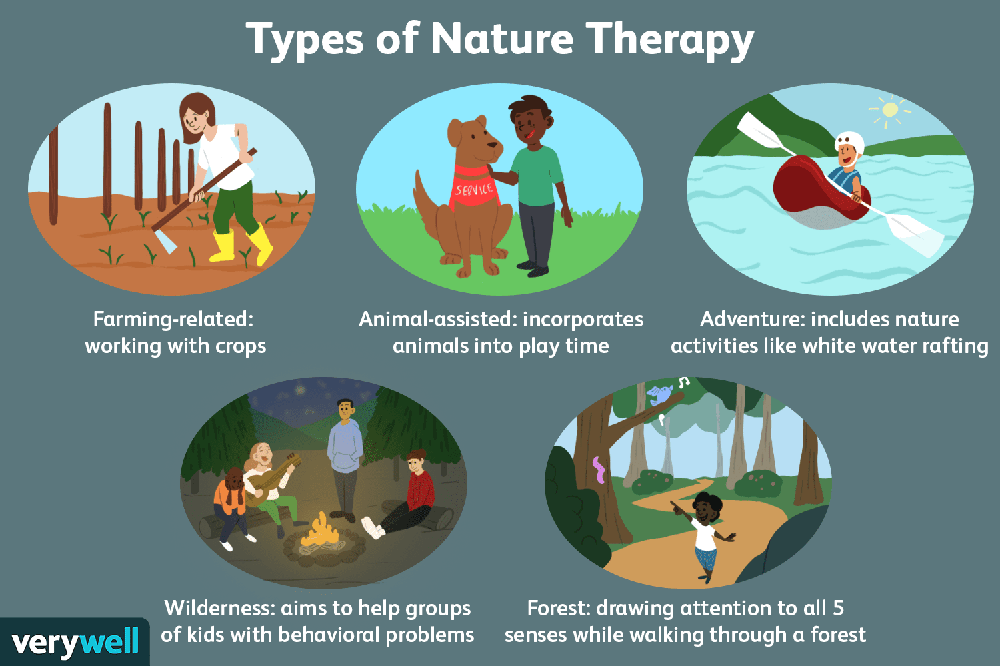
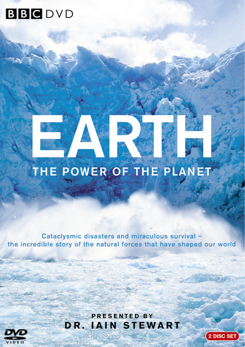
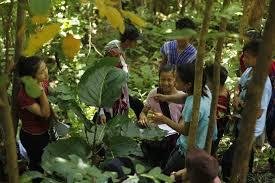
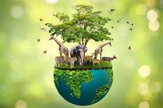
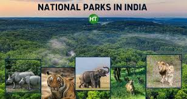
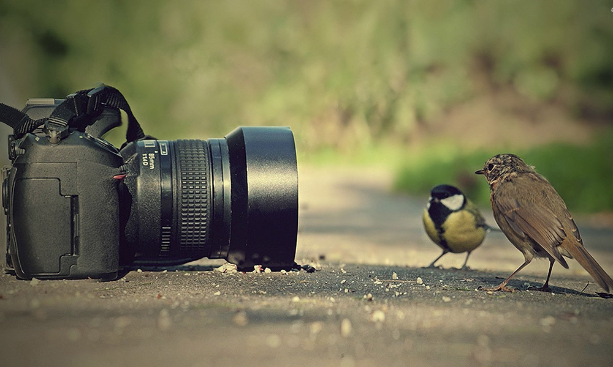

Home
About Us
Features
Nature Explorer Bot
Features

Nature Therapy
Feature
: Therapeutic practices using nature to improve mental and physical health.
Activities
: Forest bathing, nature walks, meditation in nature.
Benefits
: Reduced stress, improved mood, enhanced well-being.

Nature Documentaries
Feature
: Films and series that explore the natural world.
Popular Series
: Planet Earth, Blue Planet, Our Planet.
Focus Areas
: Wildlife, ecosystems, environmental issues.

Nature Education Programs
Feature
: Programs aimed at teaching about nature and conservation.
Methods
: Outdoor classes, workshops, interactive sessions.
Goals
: Raise awareness, promote sustainability, foster a love for nature.

Wildlife Conservation
Feature
: Efforts to protect endangered species and their habitats.
Strategies
: Habitat preservation, anti-poaching measures, breeding programs.
Key Organizations
: WWF, IUCN, Conservation International.

National Parks
Feature
: Protected areas for conservation and public enjoyment.
Popular Parks
: Yellowstone, Serengeti, Banff.
Activities
: Hiking, wildlife viewing, camping.

Nature Photography
Feature
: Capturing the beauty of nature through photography.
Subjects
: Landscapes, wildlife, plants.
Techniques
: Macro photography, time-lapse, wildlife photography.